Movies
Nadieh
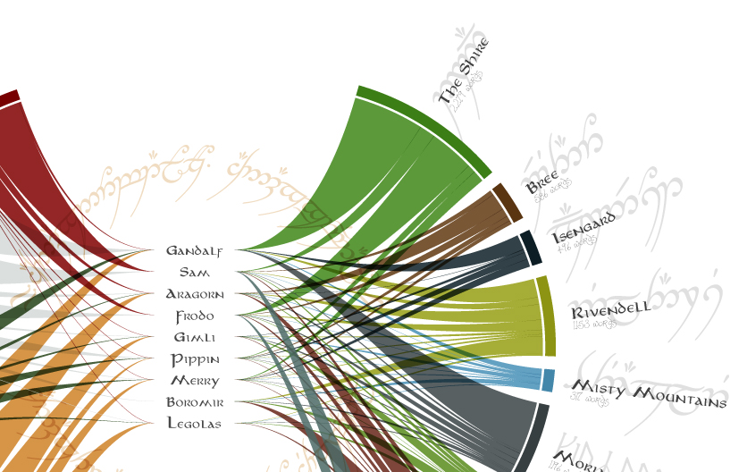week 1 | data
Starting off our collaboration with the theme movies as long as there was some personal connection to the data. I started with a general search of movies, to get a feeling of what might be out there. I came across budget and gross information per movie pretty quickly, found my way to the OMDb API and IMDb ftp, where you can download huge files with all of the information on movies & series. Having access to such a large databases seemed like a very interesting angle to start working with, but it wasn't very personal.
So, instead I started looking for data on my favorite movie (trilogy); the Lord of the Rings. I still remember, as a 12-year old girl, waiting at the movie theater more than 1.5 hours in advance with my parents to get the best spots in the theater (it was still first come, first serve back then). Collecting magazine clippings and posters and later fondly watching all of the extras (even for a second time). It's more than 9 hours of film that I can watch year after year.
I found a fascinating dataset about the number of words spoken by each character in the extended editions of all 3 films. I did a few checks, comparing the word count to scripts available on Age of the Ring (which serendipitously / sadly seems to have expired only 2 days after I finished my data preparation) and they coincided pretty well.
In the data, there is information on the number of words spoken by each character by scene and what race that character is. However, I found scenes to be a bit arbitrary. They are more attached to the making of the movie, not the movie experience. So instead I went ahead and manually added an on-screen location to each of the ±800 rows of data.
Besides a map of Middle-Earth I relied heavily on the Age of the Ring scripts of the extended editions and the original scripts of the non-extended editions found on IMSDb. These scripts sometimes mention the location when they talk about the scene in general. And of course, I used my own memory of watching the movies time and time again. You can find some more explanation about what I did & the dataset itself on the GitHub page of the dataset
It took a few hours, but afterwards it felt like a dataset that I had a personal connection to and wanted to visualize.
week 2 | sketches
Having just bought an iPad Pro 9.7" with Apple pencil I of course wanted to try it out for my dataviz sketching. This month I used the app that most charmed me, Tayasui's Sketches II.
About a month ago I got an email from Christian Wisniewski with a sketch that looked a bit like a Chord diagram but with "nodes" in the center. It seemed very intriguing and since I have a fond history of hacking the chord diagram for other purposes I wanted to try to create my own version of Christian's idea at some point. While going over ideas for the LotR data in my mind, I couldn't help but think that this dataset would fit that purpose very well.
For my dataset, the Fellowship characters would be placed in the center. The more general locations are the arcs around it. Each character would be connected to the location where they spoke and the thickness of the chord at the location would represent the number of words spoken there. I'm not quite sure if the detailed locations should provide a more detailed level within the arcs themselves. That will probably create too many chords...

I tried coming up with some other ideas, but I guess I was already sold by the chord diagram-ish one, because all of my other sketches didn't amount to anything worthwhile. There was something with a timeline; when was the scene was taking place and the number of words spoken by the character.

Another one where each location would a spirograph, with the number of petals being the number of detailed locations and sized in total to the number of words spoken.

Sketching on the iPad was quite fun. It was very easy to combine techniques, move things around, undo things. One minor downside was that I don't have the same amount of control over my pen in terms of drawing the longer strokes exactly as I want to. Perhaps its just a matter of getting used to the slippery surface.
But definitely going for the first sketch for next week!
week 3 & 4 | code
I started with Mike Bostock's most basic d3v4 chord diagram and a plan on how to turn it into something resembling my sketch. I dove straight into the source code of d3's chord and ribbon functions to understand exactly what was happening in each line of code. Luckily, the code is very compact and easy to understand. I then started making small changes, each step taking me closer to the visual on my sketch.

I still very much like the look of all strings flowing to the center, but I had 9 members of the Fellowship to place there. So I started introducing a vertical offset based on the character that belonged to each string. The first succesful result reminded me to work on string sorting as well to reduce the overal overlap :)
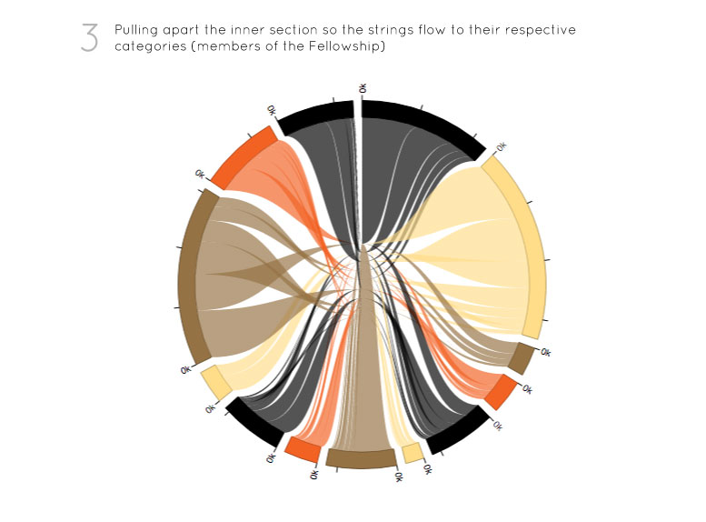{kind=link}
One specific website helped me a lot during this project, an online Cubic Bézier Curve adjuster, with which I could try out the locations of the handles with respect to the end points of a path to understand how to create more elegant S-shaped curves. I went through many, many tweaks of shapes, each one getting a bit closer to the most smooth transition between the outer arcs and the inner characters.
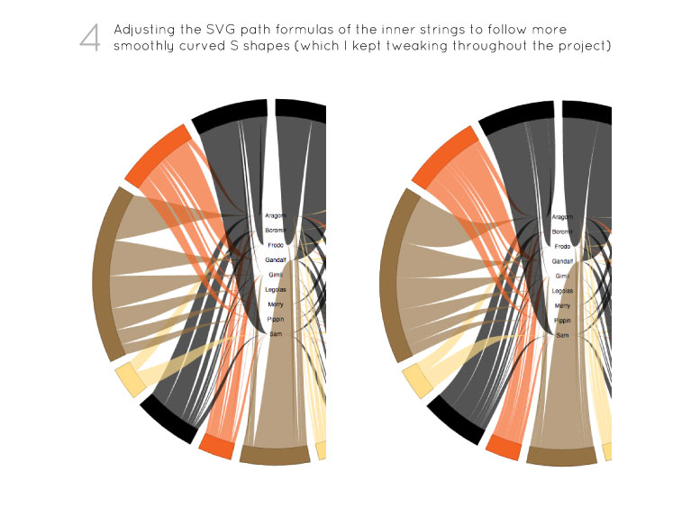{kind=link}
There was definitely a need to create empty space above and below the inner section. Not only to have a less squished feeling, but also to give the strings in that region the room to really flow in a nice S-shape. I had some experience in this when I pulled apart a normal chord diagram to visualize a flow. This time I made sure that I didn't have to make some sort of dummy string that would need to be hidden (as was the case in the flow chord diagram).
Now that the biggest challenges of the new layout were behind me, I also started looking at the design a bit. Using screenshots of the movies to set a color for each location and finding a Google font that best matched Middle Earth.
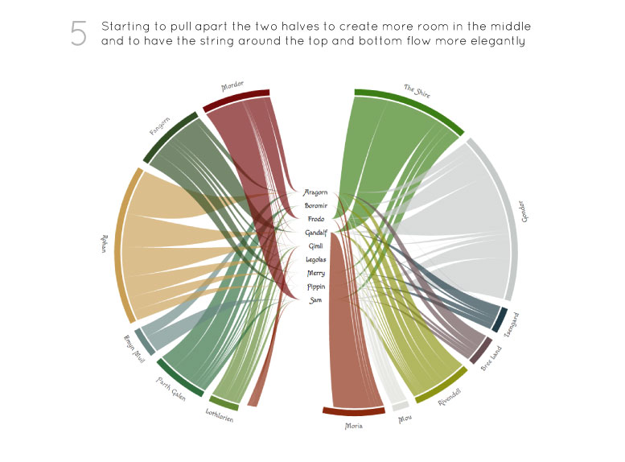{kind=link}
After I got the stretching of the two halves visually where I wanted it, I ranked the locations on order that they (first) appear in the movie or where their most important scenes are taking place. This thankfully still divided up the two halves almost symmetrically. Even more string shape adjustments and color tweaks later and I ended up with the final result that you see below.
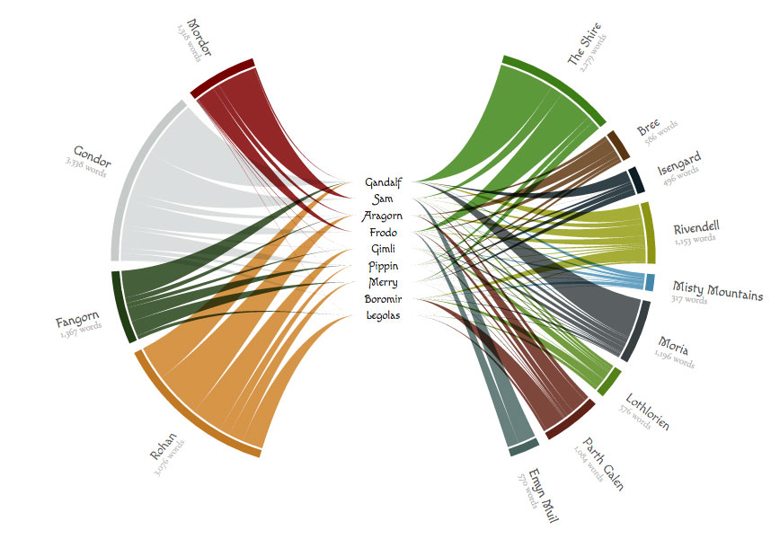One very important thing that I didn't truly start on until the very end was interactivity. With its many strings this layout lends itself very well to be inspected in more detail through hovers. For example, when you hover over a character, the number of words of all the locations adjust to show the count for that character. Shirley gave a good suggestion to fade out the locations where the character hasn't said anything. I also implemented it vice versa, when you hover over a location, the characters that haven't said anything are dimmed. And finally, to help you get some fun insights from the results, I added a short note per character that shows up when you hover over the Fellowship members


Compared to my original sketch there where two main things that I had to let go. I felt that with the more general location there were already too many strings. Therefore, I didn't even try to split things out to their more detailed location. I only used that info to guide some of the character specific notes that you see on a hover.
The other (sore) point was to let go of displaying Elvish in the online version. Nevertheless, because I still really wanted to see how it would look, I created a static version in Illustrator and downloaded a whole bunch of LotR inspired fonts. I tried my very best to find the correct translations of the locations and the inscription in the ring. Although visually nothing major has changed, I do feel that adding the right fonts makes it intuitively more LotR.
{kind=link}
See the fully interactive version here. I hope you'll find some new insights. I for one never realized Sam spoke so much. Or that Legolas spoke even less than Boromir.
It was quite a lot of fun working with a dataset about a topic that I love. I had to hold myself back several times throughout this month from not just laying my JavaScript files aside watching the whole trilogy again 😁
Shirley
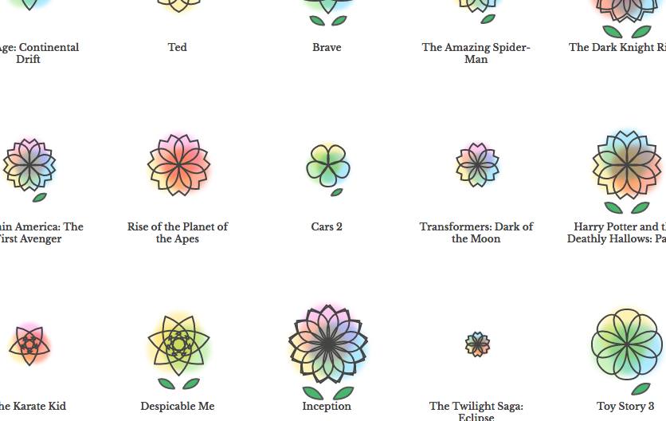week 1 | data
Anyone who's ever talked to me for more than a few minutes will know that I am absolutely horrible with pop culture references. And while I like to blame the fact that I grew up in various non-English-speaking countries for half of my childhood years (and spent the other half with my head buried in schoolwork), I know it's also because I just didn't watch that many movies growing up.
So I was pretty excited to do movies for our first month: how many big, blockbuster summer time movies have I watched in my lifetime?
Like Nadieh, I found OMDb API with a simple Google search. Unfortunately, it only let me search the movies by title or IMDb id, and I needed a way to get the top summer movies by year. Fortunately, IMDb has an advanced search feature that is beautifully parameterized, and so it didn't take me long to form a search query.
I got the top US-grossing movies for June 1st to August 30th for each of the years I have been alive, and took the top 5 movie id's for each year. I then fed those id's into the OMDb API, which gave me back a detailed set of information for each movie, including ratings and genre information.
Looking through the data I found that the most popular genres for summer movies were Action & Adventure, with Comedy following third. I also learned that (unsurprisingly) I have only watched 35 of the 140 movies, a rate of 25%. Out of all the movies I watched, the top genres were Adventure, Action, Comedy, and Animation. And out of the 35 movies I have seen, only 12 were in theatres - and all after the years of 2007 (aka the summer before my senior year of high school).
On the bright side! Out of the top 20 best rated movies, I have watched 15: a whopping rate of 75% so I guess I'm doing something right 😁
Code for getting movie data
Bl.ock exploring the movie data
week 2 | sketches
Since I had pulled summer time movies for my dataset, I decided I also wanted someone summer for my visualization.
My first inspiration came when standing along the Berkeley Marina on July 4th, and as the fireworks went off above our heads, I couldn't help but think: what's more summer-y than fireworks? I wanted to create different fireworks for each movie, colored by their genre, sized by their box office sales. I wanted the fireworks to boom and animate according to their release date. I wanted to have their descent last proportionally to the number of their weeks in the theatre.

The second inspiration came when I thought of sunflowers, and how fun it'd be to create summer flowers for each movie.

I was also enamored by the idea of delauney triangulation, introduced to me by Ian Johnson (@enjalot), but couldn't quite make it work:

Though in the beginning I was much more excited about the fireworks, I ultimately decided that the flowers were much prettier and more fun to code. It was also more straightforward; I wasn't as sure about the potential math the fireworks would require (I thought maybe I could do something with the gravity function of the force layout over time), and Nadieh agreed that I could file it away for another month.
week 3 & 4 | code
The toughest part of coding the flowers was the beginning, where I had to refresh myself on svg paths, and the cubic curve command in particular. At first, I had to draw out the shapes of the petals to work out the commands:
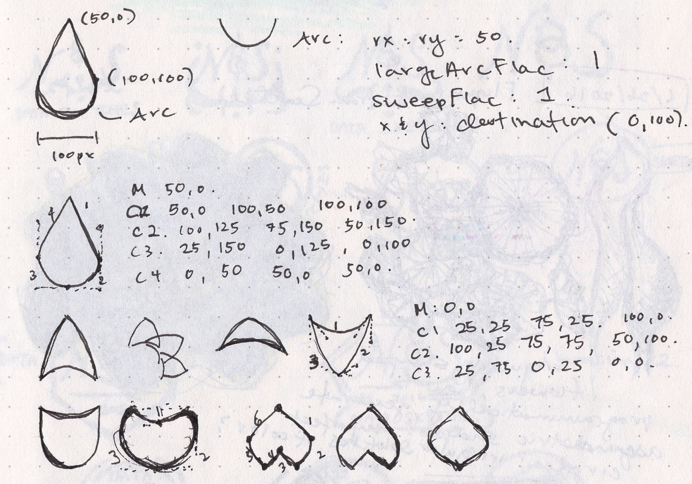{kind=link}
But after a while, I was able to just code the petal shapes directly:
{kind=link}
The most inspired shape, I think, is the cherry blossom 🌸 that Nadieh suggested:
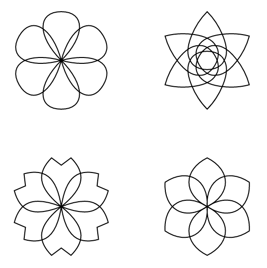{kind=link}
After that, the code came naturally. I assigned both the number of petals and the size of the flower itself to the data, in particular the movies' number of imdb votes and rating.
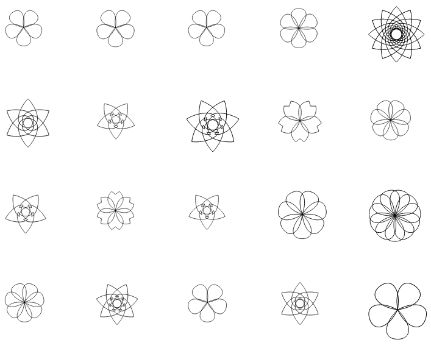{kind=link}
The most fun part was adding the colors (and again, I have Nadieh to thank for her two brilliant tutorials: 1, 2), while the most dreaded was adding the legend (which took a whole afternoon).
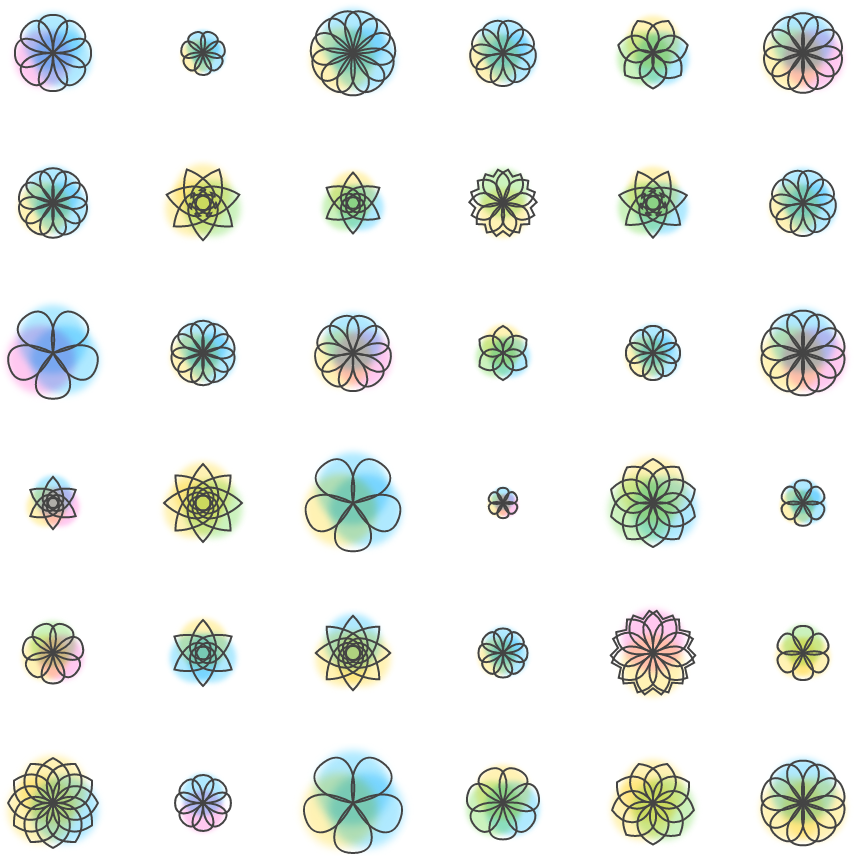{kind=link}
I was incredibly happy with the result - I gushed about it to anyone who would listen for a good few days. My favorite find was definitely Batman & Robin from 1997, which had an unfortunate 3.7/10 rating on IMDb, and is the most adorably tiny spec of a flower. Others, like Inception, was marvelously large and complex. But of all the flowers, my favorite is definitely Harry Potter 7.2:
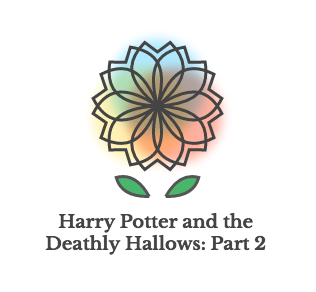{kind=link}
And I also had a little bit of fun plugging a different dataset - that of all the top films from the last decade - into the visualization:
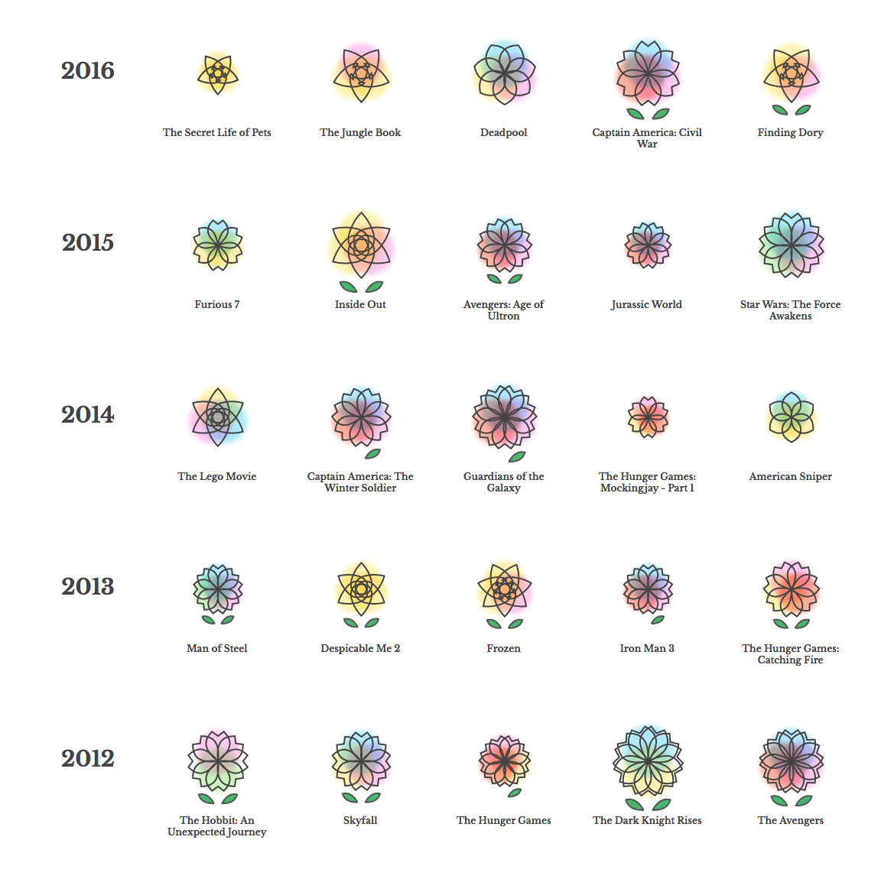{kind=link}